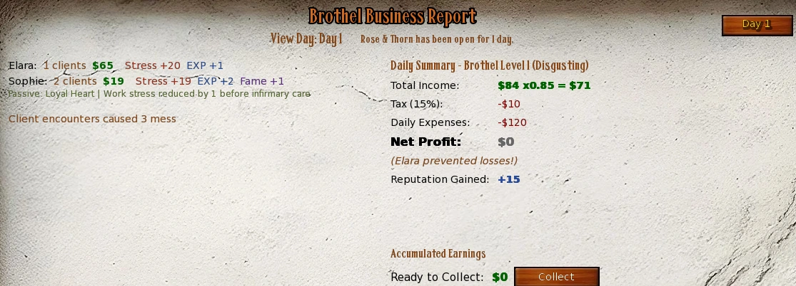
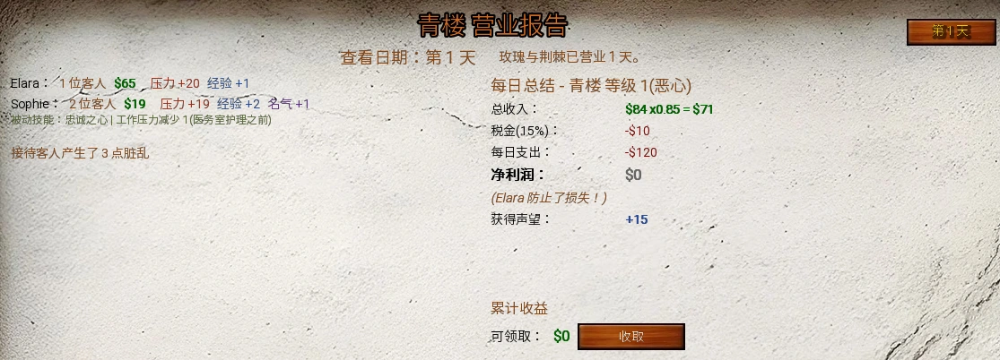

Select a screenshot to enlarge it. Screens show example inventories and progress.
Read the daily report
This page explains the numbers behind the Rose & Thorn operations guide. Ordinary worker pay is one daily payment roll, not a payment multiplied by every client. Bonuses apply in stages with integer truncation; adding their percentages together usually gives the wrong result.
Reports calculate completed in-game days, beginning on the day you gained ownership. Opening Get Business Report in Elara’s Office catches up missing days once and stores the results. The unfinished current day does not pay yet. Use the report’s collection control to transfer positive pending profit into Wealth; rereading an old day cannot pay twice.
Missing days use the roster, vacation slots, assignments and equipment present when they are calculated. They do not reconstruct a historical management snapshot. Open reports regularly when changing assignments. The starting reputation rank prices that day’s worker income; a rank earned from today’s reputation rewards affects later calculations.

Worker stats and EXP purchases
| Stat | Practical role |
|---|---|
| Stamina | Chance to prevent 2 incoming work stress; determines maximum Health |
| Intelligence | Chance to double base client EXP; Ballroom training range |
| Dexterity | One of six stats in the Fame roll; event checks |
| Ability | Client range and double-pay chance |
| Appearance / Charisma | Set the daily pay range; event checks |
| Fame | Adds to that day’s reputation pool |
| Experience | Spendable currency for primary-stat upgrades |
The six primary stats have a stored cap of 999. Raising a stat from N to N+1 costs N+1 worker EXP. Ability 30→31 costs 31 EXP, then 31→32 costs 32. Buying Stamina through the management stat button also restores Health to its recalculated maximum.
Maximum Health is min(999, max(100, Stamina × 10)). A worker with Iron Constitution multiplies the Stamina term by 1.5 first. This worker check is separate from the player’s combat skill. Item Appearance and Charisma are added for pay and the daily Fame check; item Fame bonuses remain only while that item is equipped.
Innate worker passives
Each worker has one assigned innate passive, shown in Manage Workers; the daily report records its actual contribution. The operations roster lists the individual names. These seven families affect an ordinary working day:
| Family | Applied effect |
|---|---|
| Personal income | +5% after Loyalty bonuses, before training/VIP/event multipliers |
| EXP | +1 after other ordinary work-EXP bonuses |
| Work stress | −1 before Infirmary prevention, minimum 0 |
| Double pay | +3 percentage points, up to 100% effective chance |
| Cleaning | +2 building cleaning after maid cleaning is rolled |
| Clients | +1 with normal work stress, EXP and mess |
| Daily reputation | +1 before building reputation multipliers |
Elara, Raven, Valkyra, Brandy, Willow and Vixen instead have role passives describing their Office, Dungeon, Security, Bar, Infirmary or VIP service. Those descriptions explain the existing room benefit; they do not add a second copy of it. No ordinary work-family bonus is earned on vacation, during rest, during Ballroom replacement training, or after refusing work.
Clients and the daily pay roll
Raw Ability A gives an inclusive client roll from max(1, floor(A÷10)−2) to floor(A÷10)+2. Ability 50 starts at 3–7. Add bedroom, Bar/VIP, equipment and innate-passive clients, plus distributed Kitchen, Promotion and maid-advertising clients. Kitchen gives one building-wide client per apprentice. Effective Promotion above 1 gives a building-wide random pool from 0 through that level; it is not that many clients for every worker.
After equipped Appearance/Charisma bonuses, base pay ranges from floor(min(Appearance, Charisma)÷2) to 2 × max(Appearance, Charisma). Apply cleanliness to the range, then clothing, then the bedroom maximum, truncating each modified bound. Roll one daily payment between those limits.
The double-pay threshold is floor(raw Ability÷2) + clients at this stage + any innate +3. Roll 1–100; reaching 100 guarantees doubling. More clients help this roll, but also increase work stress and mess. Balance Appearance and Charisma for a stronger pay floor.
Cleanliness, clothing and bedroom multipliers
| Cleanliness | Pay minimum | Pay maximum | Reputation |
|---|---|---|---|
| 0–4 | ×0 | ×1 | ×0 |
| 5–14 | ×0.25 | ×1 | ×0.25 |
| 15–29 | ×0.50 | ×1 | ×0.50 |
| 30–44 | ×0.75 | ×1 | ×0.75 |
| 45–59 | ×1 | ×1 | ×1 |
| 60–74 | ×1 | ×1.20 | ×1.20 |
| 75–89 | ×1 | ×1.40 | ×1.40 |
| 90–100 | ×1 | ×1.60 | ×1.60 |
| Clothing | Pay minimum | Pay maximum | Flat daily reputation |
|---|---|---|---|
| 1 | ×1 | ×1 | +0 |
| 2 | ×1 | ×1.20 | +1 |
| 3 | ×1.10 | ×1.30 | +2 |
| 4 | ×1.20 | ×1.40 | +3 |
| 5 | ×1.30 | ×1.50 | +4 |
| 6 | ×1.40 | ×1.60 | +5 |
| Bedroom | Clients | Pay maximum | Flat daily reputation |
|---|---|---|---|
| 1 | +0 | ×1 | +0 |
| 2 | +0 | ×1.10 | +1 |
| 3 | +1 | ×1.25 | +3 |
| 4 | +2 | ×1.40 | +5 |
| 5 | +3 | ×1.60 | +7 |
Pay uses cleanliness after any immediate daily-event change and before maid cleaning. Reputation uses the later post-cleaning value. Even at cleanliness 0, the pay maximum remains available; only the minimum and reputation multiplier become zero.
Example and later pay order
Appearance 40 and Charisma 30 give $15–$80. Cleanliness 90, clothing 6 and bedroom 5 change this to $21–$326. Then apply: successful double pay → item income percentage and flat amount → item income multiplier → successful Loyalty bonus → innate +5% income, if applicable → gifted-training multiplier → VIP ×2 → targeted daily-event multiplier. A targeted ×0 event remains zero. High-Loyalty extra-client pay is added after the earlier double-pay/item stages, so those stages do not repeat for each extra client.
Stress, recovery, Loyalty and work EXP
Work stress starts at 10, or 7 while Willow is active. A successful raw Stamina roll removes 2; add max(0, clients−2), subtract item stress reduction and the innate −1 if applicable, flooring at zero. Master Bedroom apprentices receive no positive daily work/event stress. Dungeon apprentices are protected against Stress increases and Loyalty loss, including training stress. These assignments do not erase existing Stress.
For other workers, the Infirmary prevents at least one incoming work-stress point per apprentice. With Medicine m and a apprentices, each incoming point also rolls min(100, m×a)%; prevention is the greater of successful rolls and the apprentice guarantee, never above the incoming amount. It prevents new work stress, not old stress or all event stress.
| State / threshold | Result |
|---|---|
| Stress >75 after work | Starts 2 rest days |
| Health ≤0, if exhaustion did not trigger first | Starts 4 sick-rest days, or 3 with Willow active |
| Rest completion day | Stress 0 and full Health; no ordinary work that day |
| Loyalty <30 | Worker-specific chance to refuse work |
| Loyalty >80 | Worker-specific chance for one equally chosen bonus: 1–2 clients with extra pay, ×1.25 pay, or +2 daily reputation |
| Vacation day | No ordinary work; +25 Loyalty up to 150, −40 Stress, +40 Health |
Loyalty decay chances and the chance of losing a second point differ by worker. Vacation, Dungeon assignment and loyalty-lock equipment pause decay without a deferred backlog. Ordinary gains stop at 100; an existing resort/item buffer above 100 is preserved rather than instantly discarded.
Work EXP order and Ballroom replacement
Start with clients before high-Loyalty extra clients. A successful raw Intelligence roll doubles that number. Add Secret Room apprentices and flat item EXP → item EXP percentage → Master Bedroom ×1.5 → maid Mentorship percentage for apprentices → innate +1 EXP. Truncate each applicable stage. Event EXP is awarded separately and is not multiplied again. High-Loyalty extra clients arrive too late to add work EXP or work stress. A Ballroom trainee instead receives random 60–100 + random 1–max(1, Intelligence) EXP, plus applicable Mentorship; no normal clients, pay, Fame roll or worker mess.
Fame and reputation growth
A working worker averages all six primaries, including equipped Appearance/Charisma used for pay. A 1–100 roll no higher than that average adds 1 permanent Fame. Dexterity therefore matters even though it does not directly set the daily pay range. Events can change Fame separately.
The daily reputation pool sums each working worker’s current Fame, clothing bonus, bedroom bonus, flat equipment bonus, innate +1 if applicable, and successful Loyalty reputation bonus. Multiply by post-cleaning cleanliness and the global event reputation multiplier; a blocking event gives zero. Then add, in order: Promotion’s random 0–10×level% when above level 1 → Decor’s random 0–5×level% → owned Christmas Wreath +5% → eligible supporter bonus +5% (“Patreon Master” in the report) → Office +5% per apprentice → owned Bar +5% plus 1% per apprentice → maid equipment reputation percentage → Ballroom +10% if staffed. Every stage uses the running result and truncates its added amount.
Reputation thresholds
| Rank | Name | Cumulative points | Worker-income bonus |
|---|---|---|---|
| 1 | Disgusting | 0 | +0% |
| 2 | Revolting | 500 | +5% |
| 3 | Filthy | 1, 500 | +10% |
| 4 | Dirty | 4, 000 | +15% |
| 5 | Shabby | 7, 500 | +20% |
| 6 | Poor | 12, 000 | +25% |
| 7 | Mediocre | 18, 000 | +30% |
| 8 | Acceptable | 26, 000 | +35% |
| 9 | Decent | 36, 000 | +40% |
| 10 | Good | 50, 000 | +45% |
| 11 | Fine | 70, 000 | +50% |
| 12 | Quality | 95, 000 | +55% |
| 13 | Excellent | 125, 000 | +60% |
| 14 | Superior | 160, 000 | +65% |
| 15 | Premium | 200, 000 | +70% |
| 16 | Luxurious | 250, 000 | +75% |
| 17 | Exquisite | 310, 000 | +80% |
| 18 | Royal | 380, 000 | +85% |
| 19 | Kingly | 460, 000 | +90% |
| 20 | Godlike | 550, 000 | +95% |
There is no Rank 20 cap. Rank 21 is Godlike (1), at 685, 000 points, giving +100% worker income. The next required increment is 202, 500; each subsequent increment is the previous one ×1.5, rounded up. The income bonus continues to be 5 × (rank−1)%.
Building income, tax and upkeep
Sum final worker pay, then apply building bonuses in this order: starting reputation rank → Christmas Wreath +5% → supporter bonus +5% → Office +5% per apprentice → Bar +5% plus 1% per apprentice → Decor’s random 0–5×level% → maid wealth percentage → global event multiplier. Percentage additions truncate separately. The Wreath checks ownership and does not require Christmas to be active. Decor rolls independently for income and reputation.
Tax = floor(gross ×15%). Normal net = max(0, gross−tax−upkeep). A Ballroom trainee then costs floor(normal net×15%), and working monster income is added last. A negative normal result does not deduct cash from the player’s Wealth in this calculation.
Upkeep = $60 + $20 × counted room levels. Count the Master Bedroom, every defined worker bedroom, and effective Bar, Maids Quarters, Infirmary, Security, Exterior and Brothel Dungeon levels. Resting or otherwise non-earning workers’ bedroom levels still count. Apprentice staffing can raise effective room levels and therefore upkeep; acquired maids contribute to the Maids Quarters level. There is no extra independent maid-wage line here.
Worked building example
Worker pay $1, 000; rank 10; Wreath; one Office apprentice; Bar with two apprentices; Decor roll +10%; maid wealth +5%; no supporter bonus or event change: 1, 000 → 1, 450 → 1, 522 → 1, 598 → 1, 709 → 1, 879 → 1, 972 gross. Tax is $295. With $200 upkeep, normal net is $1, 477. A Ballroom trainee’s $221 fee leaves $1, 256 before separate monster income.
Mess and cleaning
For each worker, start with final clients, including high-Loyalty extra clients. One 1–100 roll gives ×2 mess at roll≤10+clients; otherwise ×1.5 at roll≤20+clients; otherwise ×1.25 at roll≤30+clients; otherwise ×1. Truncate, then double for a VIP beneficiary. Eight clients therefore give 16/12/10/8 mess with 18%/10%/10%/62% chances.
An owned Bar adds 10+apprentices mess; monster clients add 2 each. Apply summed maid mess-reduction percentage, then flat reduction, minimum zero. Maid cleaning uses only acquired maids:
| Maid level | Cumulative EXP | Base cleaning | Equipment slots |
|---|---|---|---|
| 1 | 0 | 10 | 1 |
| 2 | 200 | 15 | 1 |
| 3 | 600 | 20 | 1 |
| 4 | 1, 200 | 25 | 2 |
| 5 | 3, 500 | 30 | 2 |
| 6 | 7, 000 | 40 | 2 |
Full cleaning order
Each maid: floor(base×(1+personal%÷100))+personal flat. Team: floor(sum×(1+team%÷100))+team flat. Add 10 per Maids Quarters apprentice. Roll 50–150%, with the variance item bonus added to both endpoints, and truncate. Then add working employees’ innate +2 cleaning contributions, subtract reduced mess and clamp building cleanliness to 0–100. Personal flat cleaning is added after personal percentage. Maid EXP derives from rolled maid cleaning divided by acquired maid count, at least 1 before applicable EXP bonuses; innate worker cleaning is separate and does not enter that pool.
Monster earnings and daily events
Monsters use a separate calculation. They must be recruited, have arrived by the report day, not be resting, and have Tamed≥30 after applicable decay. Clients roll from 1 to max(1, floor(Ability÷10)+1). Each client independently pays from max(1, floor(Allure÷2)) to max(that lower bound+1, Aura×2). Add those rolls together. Unlike ordinary workers, monsters really are paid per client.
Working monsters gain client-count EXP, 10 Stress minus 2 on a successful Vitality roll, and a chance for +1 Ferocity based on their six-stat average. Stress above 75 starts 3 rest days; completion clears Stress but does not work that day. Primary-stat upgrades cost the next value in EXP and cap at 100. Their income bypasses the ordinary worker multipliers, normal tax/upkeep and Ballroom fee because it is added to normal net afterward.
Daily events are chosen before ordinary worker calculations from available workers who are not resting, away or Ballroom trainees. Event stat and cleanliness changes apply immediately; displayed report changes are not applied again. Targeted pay multipliers affect the worker’s final pay, while global income effects apply before tax. Security contributes +8 percentage points plus 5 per apprentice, with the final event chance normally clamped to 5–95%; individual event rules still determine which stats are tested.
Customer Appreciation is a separate business-wide opportunity: one 1-in-19 roll per processed business day when there is no pending reward. The candidate must actually have worked with clients and have clothing 1–4. Quality chance is 20+average(Charisma, Appearance) in Brothel mode, or 20+average(Charisma, Intelligence) in Hotel mode, then applicable Security/item bonuses and a 5–95% clamp. It is not a per-client roll. Its follow-up raises clothing without using Fernando’s fee or fitting allowance. See the clothing instructions and Maid System.
先看懂每日营业报告
本页解释玫瑰与荆棘经营指南背后的数值。普通员工每天只抽取一次工资，并不是把抽到的金额再乘客户数。各项加成分阶段计算并截去小数，直接把百分比相加通常算不出报告结果。
只结算已经结束的游戏日，最早从取得经营权当天开始。在Elara的办公室选择获取营业报告，会补算尚未处理的日期并保存结果；未结束的当天尚不发放收益。点击报告中的收取按钮，才把正数待收利润转入财富。反复查看旧报告不会重复领钱。
补算采用结算时的员工、休假名额、岗位与装备，并不还原过去各天的安排。换岗位或装备时宜定期查看报告。当天收入使用结算开始时的声誉等级；本次新获得的声誉等级会影响后续结算。

员工属性与经验升级
| 属性 | 实际作用 |
|---|---|
| 耐力 | 概率抵消2点新增工作压力，并决定生命上限 |
| 智力 | 概率使客户带来的基础经验翻倍，并影响舞厅经验范围 |
| 敏捷 | 参与六属性平均名气判定及事件检定 |
| 能力 | 决定客户范围与双倍工资概率 |
| 外貌／魅力 | 决定每日工资范围，并参与事件检定 |
| 名气 | 计入当天声誉基础值 |
| 经验 | 用于购买基础属性提升 |
六项基础属性的储存上限为999。某项从N升到N+1，消耗N+1点员工经验。例如能力30→31要31经验，再升到32要32经验。在管理员工界面点击耐力升级，还会把生命补满到重新计算的上限。
生命上限为min(999, max(100, 耐力×10))。员工拥有钢铁体魄时，先把耐力项乘1.5，再套用最低100与最高999。这是员工自身的判定，与玩家战斗技能分开。装备增加的外貌、魅力会参与工资及每日名气判定；装备提供的名气只在装备期间保留。
员工固有被动
每名员工有一个指定的固有被动，可在管理员工中查看；营业报告会记录当天实际生效的贡献。各人的被动名称见经营指南员工表。普通工作日使用以下七类效果：
| 类别 | 实际效果 |
|---|---|
| 个人收入 | 忠诚度奖励之后增加5%，再计训练、VIP与事件倍率 |
| 经验 | 其他普通工作经验加成之后再加1 |
| 工作压力 | 医务室防护之前减少1，最低0 |
| 双倍工资 | 额外3个百分点，有效成功率最高100% |
| 清洁 | 女仆清洁量掷骰后，额外为全店清洁2 |
| 客户 | 增加1名客户，照常产生压力、经验与脏乱 |
| 每日声誉 | 全店声誉倍率之前增加1 |
Elara、Raven、Valkyra、Brandy、Willow和Vixen则是办公室、地牢、安保、酒吧、医务室和VIP岗位被动。这些说明解释已有房间效果，不会再叠加一份相同加成。休假、休息、以舞厅训练代替工作，以及拒绝工作的当天，都不获得普通工作类被动收益。
客户与每日工资
基础能力A先决定客户随机范围：max(1, floor(A÷10)−2)至floor(A÷10)+2，含两端。能力50时是3–7人。之后再加卧室、酒吧／VIP、装备、固有被动，以及厨房、宣传、女仆广告分配来的客户。厨房每名学徒只给全店增加1名随机分配客户；有效宣传高于1时，全店额外客户池从0随机到该等级，并不是每名员工都得到这么多客户。
加上装备的外貌与魅力后，基础工资下限为floor(min(外貌, 魅力)÷2)，上限为2×max(外貌, 魅力)。依次按清洁度、服装修改上下限，再按卧室修改上限；每步截去小数，最后在范围内抽取一次每日工资。
双倍工资判定值为floor(基础能力÷2)＋此时客户数＋适用的固有3点加成，对1–100掷骰；达到100即可保证翻倍。客户增加也会增加工作压力和脏乱。外貌与魅力均衡提升，有助于抬高工资下限。
清洁度、服装与卧室倍率
| 清洁度 | 工资下限 | 工资上限 | 声誉倍率 |
|---|---|---|---|
| 0–4 | ×0 | ×1 | ×0 |
| 5–14 | ×0.25 | ×1 | ×0.25 |
| 15–29 | ×0.50 | ×1 | ×0.50 |
| 30–44 | ×0.75 | ×1 | ×0.75 |
| 45–59 | ×1 | ×1 | ×1 |
| 60–74 | ×1 | ×1.20 | ×1.20 |
| 75–89 | ×1 | ×1.40 | ×1.40 |
| 90–100 | ×1 | ×1.60 | ×1.60 |
| 服装等级 | 工资下限 | 工资上限 | 每日固定声誉 |
|---|---|---|---|
| 1 | ×1 | ×1 | +0 |
| 2 | ×1 | ×1.20 | +1 |
| 3 | ×1.10 | ×1.30 | +2 |
| 4 | ×1.20 | ×1.40 | +3 |
| 5 | ×1.30 | ×1.50 | +4 |
| 6 | ×1.40 | ×1.60 | +5 |
| 卧室等级 | 客户 | 工资上限 | 每日固定声誉 |
|---|---|---|---|
| 1 | +0 | ×1 | +0 |
| 2 | +0 | ×1.10 | +1 |
| 3 | +1 | ×1.25 | +3 |
| 4 | +2 | ×1.40 | +5 |
| 5 | +3 | ×1.60 | +7 |
工资采用每日事件立即改变清洁度之后、女仆清洁之前的数值；声誉采用清洁后的数值。清洁度为0时，工资上限仍保留，只是下限和声誉倍率归零。
示例与后续工资顺序
外貌40、魅力30得到$15–$80；清洁度90、服装6级、卧室5级会把范围改为$21–$326。之后依次是：双倍工资判定→装备收入百分比与固定额→装备收入倍率→成功的高忠诚度奖励→适用的固有5%收入→赠礼训练倍率→VIP翻倍→员工定向事件倍率。定向事件若为×0，最终仍为0。高忠诚度额外客户的工资加在先前的翻倍与装备步骤之后，不会为每名额外客户重新套用那些步骤。
压力、恢复、忠诚度与工作经验
新增工作压力从10开始，Willow启用时为7。基础耐力检定成功减2，再加max(0, 客户−2)，减装备的压力减免及适用的固有1点减免，最低0。主卧学徒不增加每日工作／事件压力；地牢学徒则受到压力不增加、忠诚度不下降的保护，训练压力也为0。这些安排不会清掉原有压力。
其他员工可由医务室抵消新增工作压力：每名学徒至少防止1点。医疗等级m、学徒a人时，每点新增压力还有min(100, m×a)%概率被防止，最终采用「成功次数」与「学徒保底」较高者，不超过新增总量。它不会消除旧压力，也不是无条件抵消所有事件压力。
| 状态／门槛 | 结果 |
|---|---|
| 工作后压力>75 | 开始休息2天 |
| 生命≤0，且未先触发疲惫 | 病休4天；Willow启用时3天 |
| 休息完成当天 | 压力归0、生命补满，但当天仍不工作 |
| 忠诚度<30 | 按个人概率拒绝工作 |
| 忠诚度>80 | 按个人概率触发奖励，三选一等概率：额外1–2名客户并获工资、工资×1.25、每日声誉+2 |
| 休假日 | 不普通工作；忠诚度+25至150、压力−40、生命+40 |
忠诚度每天是否衰减、是否再掉第2点，概率因人而异。休假、地牢学徒及锁定忠诚度的装备会暂停衰减，不会回来后补扣。普通增益止于100；已有的休假或装备超额缓冲不会一回店就被清掉。
工作经验顺序与舞厅训练
先取高忠诚度额外客户加入前的客户数；基础智力检定成功则翻倍。再依次计入密室学徒与装备固定经验→装备经验百分比→主卧×1.5→学徒适用的女仆指导百分比→固有经验+1；各步按规定截去小数。事件经验独立发放，不再重复乘工作倍率。高忠诚度额外客户加入较晚，不会额外产生工作经验或工作压力。舞厅学员改为获得随机60–100＋随机1–max(1, 智力)经验，并计入适用的指导加成；当天没有普通客户、工资、名气判定或员工脏乱。
名气与经营声誉
工作中的员工取六项基础属性平均，外貌与魅力包括本次工资计算所用的装备加成。对1–100掷骰，不高于平均值则永久增加1名气。因此敏捷虽然不直接决定工资范围，仍参与名气增长。事件也可能单独改变名气。
每日声誉基础值汇总每名工作员工的当前名气、服装奖励、卧室奖励、装备固定声誉、适用的固有1点奖励，以及成功的忠诚度声誉奖励。先乘清洁后的清洁度倍率及全店事件声誉倍率；阻断声誉的事件会使此值归0。然后依次增加：宣传高于1时随机0–10×等级%→装饰随机0–5×等级%→持有圣诞花环+5%→支持者加成（报告标为「Patreon 大师」）+5%→办公室每学徒+5%→已有酒吧+5%并每学徒再+1%→女仆装备声誉百分比→舞厅有学员时+10%。每阶段都按当前累计结果计算，并截去新增部分的小数。
声誉等级门槛
| 等级 | 名称 | 累计点数 | 员工收入加成 |
|---|---|---|---|
| 1 | 恶心 | 0 | +0% |
| 2 | 令人作呕 | 500 | +5% |
| 3 | 肮脏 | 1,500 | +10% |
| 4 | 脏乱 | 4,000 | +15% |
| 5 | 破旧 | 7,500 | +20% |
| 6 | 糟糕 | 12,000 | +25% |
| 7 | 平庸 | 18,000 | +30% |
| 8 | 尚可 | 26,000 | +35% |
| 9 | 体面 | 36,000 | +40% |
| 10 | 良好 | 50,000 | +45% |
| 11 | 良好 | 70,000 | +50% |
| 12 | 优质 | 95,000 | +55% |
| 13 | 优秀 | 125,000 | +60% |
| 14 | 优越 | 160,000 | +65% |
| 15 | 高级 | 200,000 | +70% |
| 16 | 奢华 | 250,000 | +75% |
| 17 | 精美 | 310,000 | +80% |
| 18 | 皇家 | 380,000 | +85% |
| 19 | 王者级 | 460,000 | +90% |
| 20 | 神级 | 550,000 | +95% |
声誉不封顶于20级。21级为「神级 (1)」，需要685,000点，员工收入加成+100%。下一次升级增量为202,500，之后每次增量为前一次×1.5并向上取整。收入加成始终为5×(等级−1)%。
全店收入、税与维护费
先汇总最终员工工资，再依次计全店加成：开始时的声誉等级→圣诞花环5%→支持者加成 5%→办公室每学徒5%→酒吧5%及每学徒1%→装饰随机0–5×等级%→女仆财富百分比→全店事件倍率。每段百分比新增额分别截去小数。花环只要求持有，不要求圣诞活动正在进行；装饰对收入和声誉独立掷骰。
税额=floor(税前总收入×15%)；普通净利=max(0, 税前收入−税−维护费)。舞厅有学员时，再从普通净利扣floor(净利×15%)，最后才加魔物工作收入。这项每日计算不会因普通净利为负而倒扣玩家财富。
维护费=$60＋$20×计费房间等级总和。计入主卧、所有已定义的员工卧室，以及酒吧、女仆宿舍、医务室、安保、外观与地牢的有效等级。员工休息或当天没收入，其卧室仍计费。学徒提高有效等级时可能增加维护费；已获得女仆数量计入女仆宿舍等级。这里没有另加一项独立女仆工资。
全店计算示例
员工工资$1,000、声誉10、有花环、办公室1名学徒、酒吧2名学徒、装饰抽到+10%、女仆财富+5%，没有支持者加成或事件改变：1,000 → 1,450 → 1,522 → 1,598 → 1,709 → 1,879 → 1,972税前收入。税$295，维护费$200，普通净利$1,477。若有舞厅学员，费用$221，剩$1,256，再另加魔物收入。
脏乱与清洁
每名员工以最终客户数为基础，包括高忠诚度额外客户。只掷一次1–100：不高于10＋客户时脏乱×2；否则不高于20＋客户时×1.5；否则不高于30＋客户时×1.25；其余×1。截去小数后，VIP受益员工再翻倍。8名客户对应16／12／10／8脏乱，概率分别为18%／10%／10%／62%。
已有酒吧额外产生10＋学徒数脏乱，魔物每名客户产生2脏乱。先扣女仆装备的脏乱减免百分比，再扣固定减免，最低0。只计算已获得的女仆：
| 女仆等级 | 累计经验 | 基础清洁量 | 装备栏 |
|---|---|---|---|
| 1 | 0 | 10 | 1 |
| 2 | 200 | 15 | 1 |
| 3 | 600 | 20 | 1 |
| 4 | 1,200 | 25 | 2 |
| 5 | 3,500 | 30 | 2 |
| 6 | 7,000 | 40 | 2 |
完整清洁顺序
单人清洁=floor(基础×(1＋个人百分比÷100))＋个人固定值。团队清洁=floor(单人总和×(1＋团队百分比÷100))＋团队固定值。再加女仆宿舍每名学徒10，抽取50–150%倍率；浮动装备加成会同时提高两个端点，再截去小数。之后另加工作员工的固有清洁贡献，每人适用时为2，减去减免后的脏乱，将清洁度限制在0–100。个人固定值在个人百分比之后相加。女仆经验由掷骰后的女仆清洁量除以已获得人数计算，适用经验加成前至少1；员工固有清洁独立计算，不会进入女仆经验池。
魔物收入与每日事件
魔物管理的六属性缩写依次显示为「体／狡／敏／技／全部／灵」，分别对应Vitality、Cunning、Agility、Ability、Allure、Aura；下文保留Allure与Aura英文，方便与数值范围对应。
魔物单独结算：必须已加入、在报告日之前抵达、没有休息，并在适用衰减后驯服度≥30。客户数随机1至max(1, floor(能力÷10)＋1)。每名客户独立付费，下限max(1, floor(Allure÷2))，上限max(该下限＋1, Aura×2)，再把各次金额相加。魔物确实按客户分别付费，与普通员工不同。
工作魔物获得等于客户数的经验、基础10压力，Vitality检定成功减2，并按六属性平均值判定是否增加1凶暴。压力超过75后休息3天，休完当天清掉压力但仍不工作。基础属性升级消耗下一级数值的经验，上限100。收入在普通净利之后加入，因此不套普通员工倍率、普通税费维护费或舞厅费用。
每日事件在普通员工计算之前，从当前可用、未休息、未休假、非舞厅学员的员工中选取。事件改变的属性和清洁度立即生效，报告所列变化不会再重复加一次。定向工资倍率作用于该员工最终工资，全店收入事件作用于税前收入。安保增加8个百分点，每名学徒再加5点，最终事件概率通常限制在5–95%；究竟检查哪些属性，仍由具体事件决定。
客人的谢意是全店共用的独立机会：没有待领奖励时，每个已结算经营日只抽一次1／19。候选员工必须当天确实工作并有客户，服装在1–4级。质量成功率在青楼模式为20＋平均(魅力, 外貌)，酒店模式则为20＋平均(魅力, 智力)，再计适用安保／装备并限制在5–95%。这不是逐客户抽奖。后续赠衣不收Fernando费用，也不占他的每日试衣次数。详见服装升级说明与女仆系统。
Adapted and updated from the community Chronoromancer Wiki. Community source and history · CC BY-SA 4.0. Game images © Chronoromancer Studio.